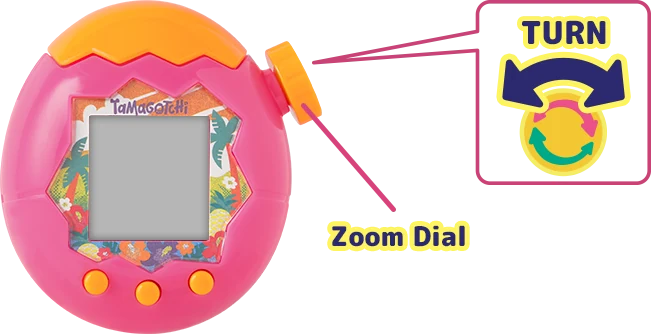

01 · 开机：先把设置选对
初次设置时选好语言、日期和时间，跟随屏幕提示开始孵蛋。A 键选择、B 键确认、C 键返回；右上角旋钮用于切换观察层级。
依据：FanFan 新手实玩记录 ↗ · 官方 FAQ ↗

02 · 四个视角，分别做什么
看星球全貌与通讯。
看环境、清理场地。
喂食、陪玩与日常照顾。
观察体内状态、处理疾病。
想找商店和设置？长按旋钮进入 Lab Mode。时间、声音分别位于 SETTINGS 的 TIME、SOUND。
03 · 第一代：先建立照顾习惯
宝宝期优先照顾当前需求：饿了喂奶、脏了清理、情绪低落时陪玩；出现疾病提示就进入细胞视角处理。不要把哭脸当成设备故障。
进入 Kid 阶段后，再探索食材、商店和小游戏。第一次养成建议自然体验完整过程，再挑战指定外形，比较容易分清“成长变化”和“照顾失误”。
04 · 忙碌时，先安排保姆
玩家实玩记录中，Lab 的 HELP（帮助）里可使用拓麻保姆。出门前先查看设备显示的费用与服务时间，确认进入照顾画面，再收起机器；使用期间不要误触退出。
把“有空时集中陪玩”和“忙前安排照顾”分开，会比长时间放着不管更容易照顾好第一代。
05 · 代码要输入到对应入口
解锁后去商店购买；没收到物品时检查点数、库存及代码。
用于角色研究资料；解锁内容可在 LAB LOG → MICROSCOPE → COLLECTION 查看。
打开中文代码图鉴 ↗ 先选主机版本，再复制相应代码。
依据：官方 FAQ ↗
06 · 养到成人后，再选择下一步
继续照顾喜欢的角色，或开始新一代。选择新蛋与配对繁殖是两种不同路线；配对的玩法可以留到熟悉照顾后再探索。
被释放到场地的角色不能再使用喂食、清理等照顾选项。操作前读清楚确认提示，保留一张纪念截图也很有意义。
依据：官方 FAQ ↗ · FanFan 进阶实玩记录 ↗
来源与延伸阅读
官方资料优先；旧文章中的机型、时限与具体数值不应直接套用所有新机型。图片均为官方玩法示意，已保存于本站；版权归 BANDAI，非原创或 AI 操作截图。